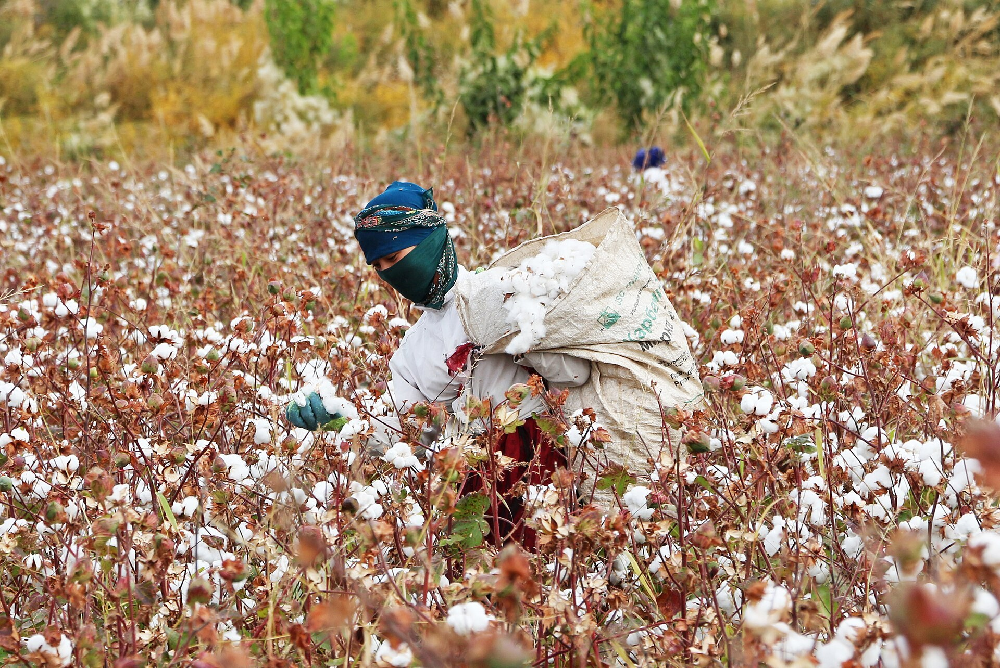

Uzbekistan to Monitor Cotton Pickers' Working Conditions From 25 September
The Federation of Trade Unions will inspect farms with 65 specialists; figures on last year's violations were released.

From 25 September to 31 October, Uzbekistan will monitor working conditions during the cotton harvest. The monitoring is run by the Federation of Trade Unions, aiming to prevent child and forced labor.
How the monitoring works
Monitoring teams include 65 specialists — five from each region. Every Monday and Saturday, team leaders receive random GPS coordinates and head out to farms. They check contracts, wage payments and violations of workers' rights. Complaints are taken via the short number 1092, the federation's website and its Telegram bot.
Last year's violations
2025 monitoring recorded delayed wages in 166 cases (8,752 workers), work without contracts in 227 cases (9,075 people), and 1,222 workers in inadequate conditions at 24 farms. About 2 million people are mobilized for the harvest each year.
The current situation cannot even be compared with 2020, let alone with the situation a decade ago.
— Bakhtiyor Makhmadaliev, deputy chairman of the Federation of Trade Unions
Context
The International Labour Organization has assessed Uzbek cotton as free of systemic child and forced labor in recent years. Administrative and criminal penalties for forced labor have been strengthened.
In brief
- Period: 25 September – 31 October 2026
- Monitor: Federation of Trade Unions, 65 specialists
- Checked: contracts, wages, rights violations
- 2025: 8,752 workers with delayed pay, 9,075 without contracts
- Complaints: short number 1092